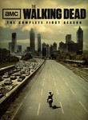

The Walking Dead
Stephen Klancher
...has seen 28
...has seen 0.5 hours
...has not seen 2.1 hours

Timeline
Most Recent:
The Suicide King
First Unseen:
Home (# 29)
...has seen 28
...has seen 0.5 hours
...has not seen 2.1 hours
Timeline
Most Recent:
The Suicide King
First Unseen:
Home (# 29)


Stephen Klancher: November 29, 2010 
Differing from the comics adds some fun since now I don't know what is going to happen...